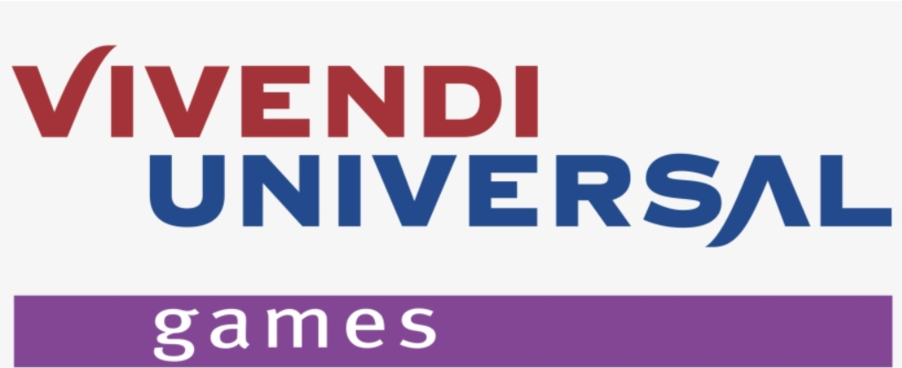

Le début de l'aventure
Blizzard Entertainment est une entreprise de développement de jeux vidéo basée aux
États-Unis. Fondée en
1991, elle est connue pour ses franchises de jeux de stratégie en temps réel et de jeux
de rôle en ligne
massivement multijoueur (MMORPG) de renom, telles que Warcraft, Starcraft et
Diablo.
Michael Morhaime: co-fondateur et ancien PDG de Blizzard
Entertainment. M. Morhaime a co-fondé Blizzard Entertainment en 1991 et a été PDG de
l'entreprise jusqu'en 2018. Il a été impliqué dans la création de nombreux jeux de
Blizzard,
notamment Warcraft, Starcraft et Diablo.
Allen Adham: cofondateur de Blizzard Entertainment. M. Adham a cofondé Blizzard Entertainment
en 1991 et a
été impliqué dans la création de nombreux jeux de Blizzard, notamment Warcraft,
Starcraft et Diablo. Il a
également été le PDG de Blizzard Entertainment de 1994 à 1998.
Frank Pearce: cofondateur de Blizzard Entertainment. M. Pearce a cofondé Blizzard
Entertainment en 1991 et a été impliqué dans la création de nombreux jeux de Blizzard, notamment
Warcraft, Starcraft et Diablo. Il a également été le PDG de Blizzard Entertainment de 1998 à
2008.
L'apparition des meilleurs jeux
On peut en dire long sur les jeux que Blizzard a sortis, on peut par exemple parler de
Warcraft ou bien de
Diablo qui à eux deux ont déjà façonné le principe du rpg mais aussi des jeux de
stratégie en mode jeux de
plateau virtuel. Bien sûr, il y a aussi World or Warcraft qui a énormément contribué à
la création des MMORPG
vue que c’est l’un des meilleurs si ce n’est même pas le meilleur MMORPG au moment ou je
vous parle, en plus de
tout cas il y a Starcraft qui viens compléter la triade des meilleurs jeux blizzard avec
des extensions
parfaites du moins jusqu’à une certaine époque.
Mais avant de vous parler du déclin de Blizzard, je voulais vous parler des autres jeux
qu’ils ont sortis
comme, par exemple, Hearthstone qui est un simple jeu de cartes multiplateforme où on
s’affronte contre des IA
ou contre de vrais joueurs en 1 contre 1. Il y a aussi l’apparition des Call of Duty et
de Crash Bandicoot 4 qui
sont apparus après l’unification de Action(Activision ?) avec Blizzard. De plus l’un des
jeux qui, il faut dire,
c’est pas mal inspiré de League of Legends, je veux bien sûr parler de Héros Of The
Storm qui est un MOBA avec
deux équipes qui doivent se battre sur une carte aléatoire avec des personnages des
divers jeux de la
franchise.
De plus il y a aussi des FPS avec Overwatch qui a plus que marqué la scène compétitive avec
des équipes de 6
contre 6 sur Overwatch 1 et 5 contre 5 sur Overwatch 2 qui comme Héros Of The Storm,
vont s’affronter sur une
carte aléatoire avec divers objectifs. En plus de ça, l’esprit compétitif est plutôt
bien présent même si
parfois il y a des fauteurs de troubles. Mais Blizzard est aussi très bon dans le
principe de Ban certain
utilisateur. Même si ce n’est pas instantané, Blizzard met souvent un point d’honneur à
renforcer leur sécurité
même si souvent des bugs sont facilement trouvés.
Vivendi

En juillet 2008, Vivendi Games, une filiale de Vivendi, a été rachetée
par Activision et a été fusionnée avec Activision pour devenir Activision Blizzard. Cette
acquisition a été réalisée afin de créer l'une des plus grandes entreprises de jeux vidéo au
monde. Vivendi Games possédait déjà une participation majoritaire dans Blizzard Entertainment,
une entreprise de développement de jeux vidéo basée en Californie, et le rachat par Activision a
permis à Blizzard de devenir une filiale complète d'Activision Blizzard.
Depuis le rachat, Blizzard a continué à développer et à publier des
jeux sous sa propre marque, notamment des titres populaires tels que World of Warcraft,
Starcraft et Diablo. Activision Blizzard est devenue l'une des plus grandes entreprises de jeux
vidéo au monde et continue de publier et de développer des jeux pour de nombreuses
plateformes.
Le commencement du déclin
Avoir un déclin dans son entreprise est totalement normal mais celle de Blizzard a atteint un
niveau
totalement improbable. Par exemple World of Warcraft, avant l’apparition de l’extension
de Cataclysm, Wow avait
vécu les meilleurs moments de sa vie mais malheureusement, après cette extension,
Blizzard a enchaîné les ventes
médiocres et surtout, l’entreprise a commencé à voir des personnes retirer leurs
abonnements car ils trouvaient
que le jeu avait perdu de sa saveur d’entente.
Pour Diablo, c’est différent, car après avoir sorti les meilleures extensions de ce même jeu,
Diablo Immortal
est sortie et là ça ne s'est pas du tout bien passé. Le jeu étant un pay to win (jeu qui
offre des avantages
parfois démesurés contre de l’argent) il a très vite vu le nombre de joueur descendre en
flèche et en plus de
ça, le jeu a été achevé par une vague ou plutôt un tsunami de critique négative montrant
que le jeu était la
pire des créations que Blizzard a pu sortir.
Il y a aussi Overwatch qui avait un succès énorme jusqu’à la venue de Overwatch 2. En fait,
Overwatch 2 était
extrêmement demandé car le jeu était de plus en plus nul car trop peu de mises à jour et
donc une perte
colossale de joueurs. En plus de ça, un mode pve aller être présenté pour améliorer les
histoires des
personnages de Overwatch. Mais tout ne s’est pas bien déroulé, Overwatch 2 est sortie
avec 2 ans même presque 3
ans de retard et en plus de ça le mode pve n’est même pas rajouté. En plus de ça, des
héros ont changé dans
leurs mécaniques et des nerfs on était placé sur des héros qui ne méritaient pas d'en
avoir, de plus des héros
trop fort ont reçu beaucoup d’amour au point d’être encore plus puissant.
Une remontée spectaculaire ?
Malgré tous ces défauts, Blizzard a quand même la tête qui reste à la surface. Avec la venue
de nouveaux jeux
et de nouvelles extensions qui ont redonné l’envie aux joueurs de revenir sur les jeux
de la franchise.
On a par exemple, l’apparition de l’extension DragonFlight pour World of Warcraft qui
présente une nouvelle
zone, une nouvelle mécanique de gameplay avec des montures, un nouveau système d’arbre
de talent, et aussi un
nouveau raid qui est juste magnifique.
Il y a aussi Diablo IV qui sortira bientôt qui peut être une excellente extension pour cette
saga. Avec des
nouveaux monstres, de nouvelles classes jouables, un nouveau gameplay qui à l’air d’être
de plus en plus fun.
Mais aussi de nouveau graphisme qui devrait être à couper le souffle surtout avec les
nouvelles technologies qui
approche.
Pour Overwatch 2, on attend surtout l’avenue du mode pve avec des nouveaux personnages mais
aussi de
nouvelles cartes jouables avec de nouveaux mode de jeux et des styles graphiques très
optimisé. Et surtout,
de nouvelle mise à niveau des personnages qui devrait rendre le gameplay plus drôle sans
à avoir
l’obligation de jouer des personnages trop puissant pour forcément gagner.
Microsoft
Microsoft a annoncé le rachat record d’Activision Blizzard le 18 janvier 2022. Depuis, la firme
mène une
bataille juridique et politique pour faire valider le rachat par les autorités dans le monde entier.
Avec
une somme annoncée à 68,7 milliards de dollars, il s’agit tout autant du rachat le plus important de
l’histoire du jeu vidéo et de Microsoft.
Avec ce rachat, Microsoft intégrerait plus de 10 000 employés répartis dans le monde au sein de
13 studios.
Si c’est la franchise Call of Duty d’Activision qui s’est vite retrouvée au milieu des discussions,
Microsoft rachète aussi des licences cultes comme World of Warcraft, Diablo, Starcraft, Tony Hawk,
Crash
Bandicoot ou encore Spyro et Overwatch. Par ailleurs, il ne faut pas oublier King et la licence Candy
Crush,
en plus de Call of Duty Mobile et Hearthstone.